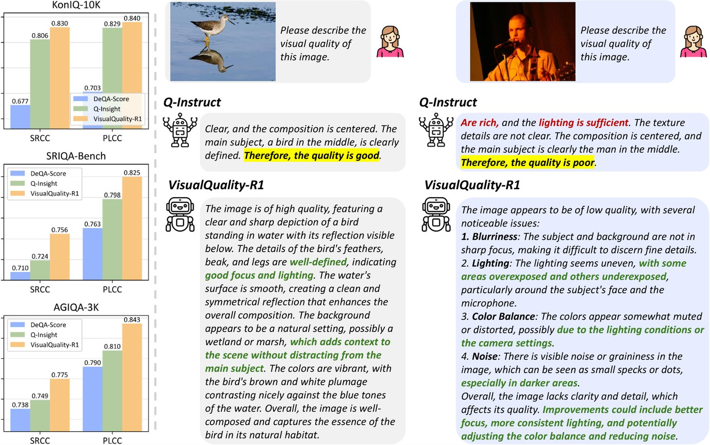
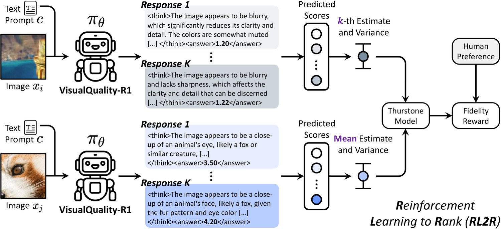
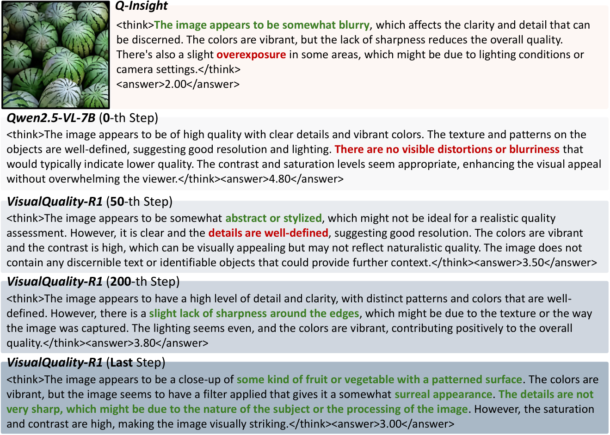
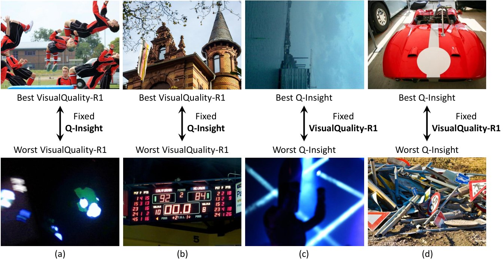
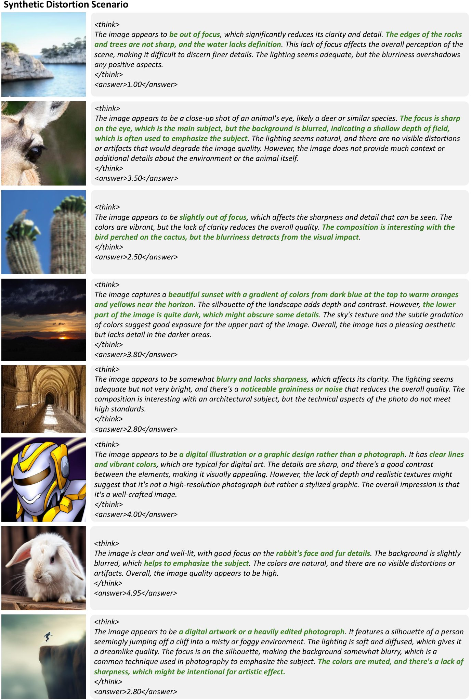
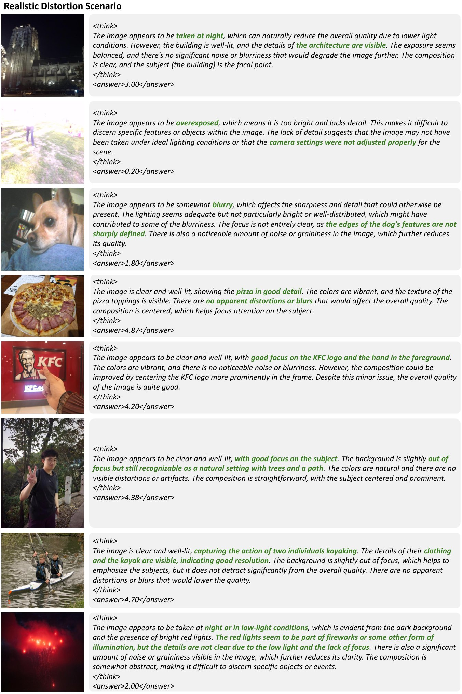

VisualQuality-R1: Reasoning-Induced Image Quality Assessment via Reinforcement Learning to Rank
DeepSeek-R1 has demonstrated remarkable effectiveness in incentivizing reasoning and generalization capabilities of large language models (LLMs) through reinforcement learning. Nevertheless, the potential of reasoning-induced computation has not been thoroughly explored in the context of image quality assessment (IQA), a task depending critically on visual reasoning. In this paper, we introduce VisualQuality-R1, a reasoning-induced no-reference IQA (NR-IQA) model, and we train it with reinforcement learning to rank, a learning algorithm tailored to the intrinsically relative nature of visual quality. Specifically, for a pair of images, we employ group relative policy optimization to generate multiple quality scores for each image. These estimates are used to compute comparative probabilities of one image having higher quality than the other under the Thurstone model. Rewards for each quality estimate are defined using continuous fidelity measures rather than discretized binary labels. Extensive experiments show that the proposed VisualQuality-R1 consistently outperforms discriminative deep learning-based NR-IQA models as well as a recent reasoning-induced quality regression method. Moreover, VisualQuality-R1 is capable of generating contextually rich, human-aligned quality descriptions, and supports multi-dataset training without requiring perceptual scale realignment. These features make VisualQuality-R1 especially well-suited for reliably measuring progress in a wide range of image processing tasks like super-resolution and image generation.

图 1：VisualQuality-R1 在图像质量打分上表现出色，同时生成上下文丰富、与人类判断一致的质量描述。
Image quality assessment (IQA) aims to quantify the visual quality of digital images consistent with human perceptual judgments. Commonly, IQA models are classified into full-reference (FR) and no-reference (NR) approaches [47], depending on the availability of pristine-quality reference images. In this paper, we focus on NR-IQA due to its practical relevance in real-world scenarios where reference images are unavailable. Over the decades, NR-IQA has evolved from knowledge-driven [33, 12] to data-driven approaches [30, 19, 54], and shifted from regression-based to ranking-based [58, 59] techniques. Nevertheless, achieving strong model generalization (e.g., generalization to unseen image distortions) remains a significant, unresolved challenge, driving recent research toward multi-dataset training [6], active fine-tuning [44], and continual model adaptation [57].
图像质量评价（IQA）旨在量化数字图像的视觉质量，使之与人类的感知判断相一致。通常，IQA 模型依是否有高质量参考图像可用而被分为全参考（FR）与无参考（NR）两类 [47]。本文关注 NR-IQA，因为在参考图像不可得的真实场景中它更具实用价值。数十年来，NR-IQA 已从知识驱动 [33, 12] 演进到数据驱动 [30, 19, 54]，并从基于回归的技术转向基于排序的技术 [58, 59]。然而，实现强模型泛化（例如泛化到未见过的图像失真）仍是一项重大的未解挑战，这推动近期研究走向多数据集训练 [6]、主动微调 [44] 与持续模型自适应 [57]。
The rapid advancement of vision-language models (VLMs) offers promising avenues for enhancing NR-IQA generalization by contextualizing it into broader vision tasks [51]. VLMs can effectively integrate multi-modal information, enabling understanding of both low-level image distortions (e.g., noise and blur) and high-level perceptual attributes (e.g., aesthetics and content semantics). This multi-modal semantic contextualization allows VLMs to articulate nuanced quality descriptions with stronger generalization.
视觉语言模型（VLM）的快速发展，为把 NR-IQA 置于更广阔的视觉任务语境中、从而增强其泛化能力，提供了颇具前景的路径 [51]。VLM 能有效整合多模态信息，既能理解噪声、模糊等底层图像失真，也能理解美学、内容语义等高层感知属性。这种多模态的语义语境化使 VLM 能够表述出细致的质量描述，并具有更强的泛化能力。
However, current NR-IQA methods mainly leverage VLMs through supervised fine-tuning (SFT), which face several critical limitations [49, 56]. First, constructing informative quality descriptions demands extensive human effort, rendering the annotation process labor-intensive and expensive11 1 Utilizing state-of-the-art proprietary VLMs such as GPT-4o [16] for automated annotation suffers from similar scalability challenges due to high computational costs and financial burdens.. Second, models trained via SFT often overfit to the biases and idiosyncrasies present in training data, and may unintentionally encounter catastrophic forgetting of acquired knowledge during pre-training. Third, SFT typically yields overly rigid and templated outputs (see Fig. 1) that may be less useful.
然而，当前的 NR-IQA 方法主要通过监督微调（SFT）来利用 VLM，这面临若干关键局限 [49, 56]。其一，构建有信息量的质量描述需要大量人力投入，使标注过程劳动密集且昂贵11 1 使用 GPT-4o [16] 等最先进的专有 VLM 做自动标注，同样因高昂的计算成本与经济负担而面临类似的可扩展性挑战。。其二，经 SFT 训练的模型常过拟合到训练数据中存在的偏见与特质，并可能在无意中遭遇预训练期间所获知识的灾难性遗忘。其三，SFT 通常产生过于刻板、模板化的输出（见图 1），其实用性有限。
Reinforcement learning (RL) has recently emerged as a powerful alternative, enhancing the reasoning capabilities of LLMs, while aligning their responses with human preferences [35, 13]. In particular, DeepSeek-R1 [13] demonstrates the effectiveness of RL in promoting generalization by encouraging automated exploration of plausible reasoning paths and employing rule-based rewards to prevent reward hacking [37]. However, a direct adaptation of RL techniques to NR-IQA, as exemplified by the recent Q-Insight model [21], has been limited by its reliance on dataset-specific reward design and additional distortion-type classification. These constraints stem from its treatment of visual quality as an absolute perceptual quantity, thereby framing NR-IQA naïvely as a regression task.
强化学习（RL）近来兴起为一种有力的替代方案，它既增强 LLM 的推理能力，又使模型的回答与人类偏好对齐 [35, 13]。特别是 DeepSeek-R1 [13] 证明了强化学习在促进泛化上的有效性：它鼓励对合理推理路径的自动探索，并采用基于规则的奖励来防止奖励破解 [37]。然而正如近期的 Q-Insight 模型 [21] 所示，把强化学习技术直接套用于 NR-IQA 受制于两点——它依赖面向特定数据集的奖励设计，以及额外的失真类型分类。这些约束源于它把视觉质量视为一种绝对的感知量，从而把 NR-IQA 朴素地框定为回归任务。
In this paper, we introduce VisualQuality-R1, a reasoning-induced NR-IQA model, and we train it via reinforcement learning to rank (RL2R), a learning algorithm explicitly designed to capture the inherently relative nature of visual quality. Specifically, we employ group relative policy optimization (GRPO) [36] to derive multiple quality scores for each image in a pair. We then compute comparative probabilities between images using the Thurstone model [41] by assessing the difference between the mean quality score of one image and individual quality scores of another, normalized by their sample variances. Unlike previous methods, we define the reward function using the continuous fidelity measure [42], which provides precise guidance to facilitate quality ranking. Extensive experiments confirm that VisualQuality-R1 effectively assesses visual quality across a diverse range of distortion scenarios, outperforming discriminative deep learning-based NR-IQA models as well as a recent reasoning-induced quality regression method [21]. Moreover, VisualQuality-R1 generates contextually rich, human-aligned quality descriptions (see Fig. 1), which can be leveraged to provide targeted feedback for downstream image processing algorithms, and support fine-grained quality control in digital photography pipelines. Additionally, we demonstrate that VisualQuality-R1 remains effective across multi-dataset training scenarios without requiring perceptual scale realignment.
本文提出 VisualQuality-R1——一个推理驱动的 NR-IQA 模型，并用强化学习排序（RL2R）训练它；RL2R 是一种专为捕捉视觉质量内在的相对性而设计的学习算法。具体地，我们采用组相对策略优化（GRPO）[36] 为一对图像中的每张图像导出多个质量分数；随后依据 Thurstone 模型 [41]，用其中一张图像的平均质量分数与另一张图像的各个质量分数之差、并以二者的样本方差作标准化，计算图像间的比较概率。与既有方法不同，我们用连续的保真度度量 [42] 定义奖励函数，为质量排序提供精确的指引。大量实验证实，VisualQuality-R1 能在多样的失真场景下有效评价视觉质量，性能优于判别式深度学习 NR-IQA 模型以及近期一种推理驱动的画质回归方法 [21]。此外，VisualQuality-R1 生成上下文丰富、与人类判断一致的质量描述（见图 1），可用于为下游图像处理算法提供有针对性的反馈，并支撑数字摄影流程中的细粒度质量控制。我们还证明，VisualQuality-R1 在多数据集训练场景下依然有效，无需作感知尺度重对齐。
This section provides a structured review of related NR-IQA models, emphasizing recent advancements, particularly those leveraging VLMs.
本节对相关 NR-IQA 模型作结构化综述，重点介绍近期进展，尤其是那些利用 VLM 的工作。
NR-IQA models primarily employed regression-based approaches, wherein image quality was treated as an absolute perceptual quantity directly estimated from extracted “quality-aware” features. Initially, features were handcrafted based on natural scene statistics [33, 34], degradation-specific characteristics [46, 48, 24], and perceptual models inspired by the human visual system [45]. Nonetheless, these methods were limited by the representational capacity of handcrafted features. Later, deep learning-based regression models emerged as the dominant paradigm, using end-to-end trainable neural networks to directly predict quality scores (or, in some cases, quality distributions) [18, 30, 3, 39, 54, 52]. These models typically utilize standard regression losses such as the mean squared error and mean absolute error, or statistical distances such as the earth mover’s distance [39] and Kullback–Leibler (KL) divergence [55]. Regression-based models often struggle with generalization issues, and require labor-intensive perceptual scale realignment [31] when training on multiple IQA datasets.
NR-IQA 模型主要采用基于回归的方法，即把图像质量视为一种绝对的感知量，直接从所提取的“质量感知”特征中估计。最初，特征依据自然场景统计 [33, 34]、退化特定特性 [46, 48, 24] 以及受人类视觉系统启发的感知模型 [45] 手工设计；但这些方法受限于手工特征的表示能力。此后，基于深度学习的回归模型成为主导范式，用端到端可训练的神经网络直接预测质量分数（某些情形下也预测质量分布）[18, 30, 3, 39, 54, 52]。这些模型通常使用均方误差、平均绝对误差等标准回归损失，或推土机距离（earth mover's distance）[39]、Kullback–Leibler（KL）散度 [55] 等统计距离。基于回归的模型常受泛化问题困扰，且在多个 IQA 数据集上训练时需要劳动密集的感知尺度重对齐 [31]。
To address these shortcomings, ranking-based NR-IQA models were introduced, modeling visual quality as an intrinsically relative perceptual quantity. Gao et al. [10] pioneered the concept of quality ranking in NR-IQA, although their initial implementation relied on predefined anchor images and was not end-to-end optimized. Ma et al. [29] adapted RankNet [4] to NR-IQA by training (though not fully end-to-end) on quality-discriminable image pairs. Their subsequent work established the first end-to-end ranking-based NR-IQA method grounded in the Thurstone model [41]. Nevertheless, their approach suffers from scaling ambiguity during variance estimation. Zhang et al. [58] incorporated a hinge loss to regularize variance estimation, yet the scaling ambiguity persisted. Their study also demonstrated the superiority of the fidelity loss [42] over the conventional cross-entropy loss in ranking-based NR-IQA. Subsequent research has adopted a simpler approach by fixing the variance parameter to one (corresponding to the Thurstone Case V model), facilitating active fine-tuning of NR-IQA models on challenging examples [44, 43] and allowing for continual adaptation to novel distortion scenarios [57]. Other losses that enable quality ranking include the margin ranking loss [25], differentiable approximations of Spearman’s rank correlation coefficient (SRCC) [2], Pearson linear correlation coefficient (PLCC) [53], and statistical distances between permutation probabilities [5, 38, 17].
为克服这些缺陷，基于排序的 NR-IQA 模型被提出，把视觉质量建模为一种本质上相对的感知量。Gao et al. [10] 开创性地把质量排序的概念引入 NR-IQA，但其最初的实现依赖预定义的锚图像，并非端到端优化。Ma et al. [29] 把 RankNet [4] 适配到 NR-IQA，在质量可区分的图像对上训练（尽管并非完全端到端）；其后续工作确立了首个基于 Thurstone 模型 [41] 的端到端排序式 NR-IQA 方法。然而该方法在方差估计上存在尺度模糊性。Zhang et al. [58] 引入 hinge 损失对方差估计作正则化，但尺度模糊性依然存在。他们的研究还证明了保真度损失 [42] 在基于排序的 NR-IQA 中优于传统的交叉熵损失。后续研究采取了更简单的做法：把方差参数固定为一（对应 Thurstone Case V 模型），从而便于在困难样本上主动微调 NR-IQA 模型 [44, 43]，并支持对新型失真场景的持续自适应 [57]。其他可实现质量排序的损失还包括间隔排序损失 [25]、Spearman 秩相关系数（SRCC）[2] 与 Pearson 线性相关系数（PLCC）[53] 的可微近似，以及排列概率之间的统计距离 [5, 38, 17]。
The integration of VLMs into NR-IQA has recently gained traction, particularly due to their proficiency in capturing contextual semantics through multi-modal representation learning. Early attempts include multitask adaptation of CLIP [59], as well as SFT-based methods like Q-Align [50], Compare2Score [60], DepictQA [56], and DeQA-Score [55], which trained VLMs to generate either quality scores, distributions, or descriptions. Closest to ours, Q-Insight [21] explored reasoning-induced quality regression through RL. However, Q-Insight struggles with the dataset-specific reward calibration, added complexity of auxiliary distortion-type classification, and generalization to novel distortion scenarios. In contrast, our VisualQuality-R1 redefines the use of VLMs in NR-IQA by shifting from absolute regression to relative ranking, leading to enhanced generalization across distortion scenarios with better quality justifications.
把 VLM 引入 NR-IQA 近来日益受到关注，主要因为它们擅长通过多模态表示学习捕捉上下文语义。早期尝试包括 CLIP [59] 的多任务适配，以及 Q-Align [50]、Compare2Score [60]、DepictQA [56]、DeQA-Score [55] 等基于 SFT 的方法——它们训练 VLM 生成质量分数、质量分布或质量描述。与本文最接近的是 Q-Insight [21]，它通过强化学习探索了推理驱动的画质回归；但 Q-Insight 受困于面向特定数据集的奖励标定、辅助失真类型分类带来的额外复杂度，以及对新型失真场景的泛化能力。相比之下，我们的 VisualQuality-R1 重新定义了 VLM 在 NR-IQA 中的用法：从绝对回归转向相对排序，从而在跨失真场景下获得更强的泛化能力，并给出更充分的质量依据。

图 2：经由 RL2R 训练的 VisualQuality-R1 系统框图。给定一对图像 与共享的文本提示 ，VisualQuality-R1 生成 个回答。依照 GRPO [36]，每个回答都包含详细的推理过程与一个预测质量分数。为评估相对视觉质量，我们计算在 Thurstone 模型 [41] 下图像 被认为优于 的非对称比较概率：用 的第 个分数减去 的平均预测分数，并以二者的样本方差作标准化。保真度奖励由人类偏好导出，为策略优化提供连续的监督信号。
To harness both the powerful reasoning-inducing capabilities of RL and the intrinsically relative nature of visual quality, we propose an NR-IQA model—VisualQuality-R1—and an RL2R method of training it that seamlessly integrates the Thurstone model within GRPO. Fig. 2 shows the system diagram of VisualQuality-R1.
为同时利用强化学习强大的推理诱导能力与视觉质量内在的相对性，我们提出 NR-IQA 模型 VisualQuality-R1，以及训练它的 RL2R 方法——后者把 Thurstone 模型无缝嵌入 GRPO 之中。图 2 给出 VisualQuality-R1 的系统框图。
Given a text prompt and an image , our goal is to fine-tune a pre-trained VLM, with policy , to produce a scalar quality score in the range of , following a step-by-step reasoning process, encapsulated within specially designated tags for explicit instruction and enhanced interpretability. The complete structured text prompt is provided in Table 1.
给定文本提示 与图像 ，我们的目标是微调一个预训练 VLM（策略为 ），使其在遵循逐步推理过程之后输出 区间内的标量质量分数；推理过程被封装在专门指定的标签内，以实现显式指示并增强可解释性。完整的结构化文本提示见表 1。
More specifically, for a training batch of images , where is the minibatch size, we apply GRPO to generate quality predictions for , . This output naturally encodes predictive uncertainty, which is crucial for making reliable relative quality ranking. Under the Thurstone model [41], the visual quality of an image is assumed to follow a Gaussian distribution. Thus, we compute the asymmetric comparative probability for each of the ordered image pairs by subtracting the mean quality score of from the -th quality score of , standardized by their sample variances:
更具体地，对一个含 张图像的训练批次（ 为小批量大小），我们应用 GRPO 为 与 生成 个质量预测。该输出天然地编码了预测不确定性，而这对作出可靠的相对质量排序至关重要。在 Thurstone 模型 [41] 下，图像的视觉质量被假定服从高斯分布。因此，我们对 个有序图像对中的每一对计算非对称比较概率：用 的第 个质量分数减去 的平均质量分数，并以二者的样本方差作标准化：
| (1) |
where is the standard Gaussian cumulative distribution function. and represent the mean and variance of the quality predictions for , respectively. is a small positive constant to avoid any potential division by zero. Compared to previous ranking-based NR-IQA models that fix the variance parameter in Eq. (1) to one, we explicitly leverage sample variances derived from GRPO. This gives us an opportunity to dynamically accommodate predictive uncertainty for different images. Meanwhile, using the sample mean for quality comparison stabilizes the asymmetric probability estimate and the subsequent reward calculation by appropriately penalizing outlier predictions.
其中 是标准高斯累积分布函数， 与 分别表示 的质量预测的均值与方差， 是一个小的正常数，用于避免可能出现的除零。与以往把式 (1) 中方差参数固定为一的排序式 NR-IQA 模型不同，我们显式地利用由 GRPO 导出的样本方差，这使我们有机会针对不同图像动态地适应预测不确定性。同时，用样本均值作质量比较能通过适当惩罚离群预测，稳定非对称概率估计与后续的奖励计算。
The true preference is derived from human mean opinion scores (MOSs):
真实偏好 由人类平均意见分（MOS）导出：
| (2) |
表 1：VisualQuality-R1 所用的结构化文本提示。
| You are doing the image quality assessment task. Here is the question: |
| What is your overall rating on the quality of this picture? The rating should be a float between 1 and 5, rounded to two decimal places, with 1 representing very poor quality and 5 representing excellent quality. First output the thinking process in <think> </think> tags and then output the final answer with only one score in <answer> </answer> tags. |
An important aspect of our RL2R algorithm is that we define the reward function for each quality estimate as the fidelity measure [42]—a continuous analogue of the discretized binary reward [13, 21], averaged across all image pairs:
RL2R 算法的一个重要方面是：我们把每个质量估计 的奖励函数 定义为保真度度量 [42]——即离散二值奖励 [13, 21] 的连续化形式——并在全部 个图像对上取平均：
| (3) |
This continuous reward feedback provides precise guidance during RL2R by capturing subtle variations in quality ranking, thus improving generalization across diverse distortion scenarios. We collect fidelity rewards for into the vector , and compute the relative advantage by standardizing rewards within group:
该连续奖励反馈通过捕捉质量排序中的细微变化，为 RL2R 提供精确的指引，从而提升在多样失真场景下的泛化能力。我们把 的 个保真度奖励收集到向量 中，并通过在组内对奖励作标准化来计算相对优势 ：
| (4) |
The final policy update of is guided by the regularized objective in GRPO:
的最终策略更新由 GRPO 中的正则化目标引导：
| (5) | ||||
Here, denotes the stable reference policy obtained after VLM pre-training, and is the policy from the previous RL2R training epoch, from which we sample reasoning trajectories . The second KL divergence term is approximated by
这里， 表示 VLM 预训练后得到的稳定参考策略， 是上一轮 RL2R 训练 epoch 的策略，我们从中采样 条推理轨迹 。第二个 KL 散度项由
| (6) |
incorporated to ensure that the updated policy does not deviate excessively from . is the clipping threshold to prevent large and potentially destabilizing updates to the policy. The coefficient serves as a balancing factor between the reward-weighted likelihood term and the KL regularization term.
近似，引入它是为了确保更新后的策略 不会过度偏离 。 是截断阈值，用于防止对策略产生过大且可能破坏稳定性的更新。系数 充当奖励加权似然项与 KL 正则项之间的平衡因子。
We conclude this section by highlighting the key strengths of our VisualQuality-R1. First, VisualQuality-R1 inherits all the advantages of ranking-based NR-IQA models, enabling effective multi-dataset training, active fine-tuning, and continual model adaptation without requiring perceptual scale realignment [31], a feature notably absent in regression-based NR-IQA approaches. Second, trained via RL2R, VisualQuality-R1 mitigates the scalability and overfitting issues inherent in SFT-based models. Third, VisualQuality-R1 promises to both improve model generalizability and furnish contextually rich textual justifications alongside numerical quality scores, thereby boosting its practical relevance in real-world IQA applications.
本节最后总结 VisualQuality-R1 的关键优势。其一，VisualQuality-R1 继承了排序式 NR-IQA 模型的全部优点，支持有效的多数据集训练、主动微调与持续模型自适应，且无需感知尺度重对齐 [31]——这一特性在基于回归的 NR-IQA 方法中显著缺失。其二，经由 RL2R 训练，VisualQuality-R1 缓解了基于 SFT 的模型固有的可扩展性与过拟合问题。其三，VisualQuality-R1 有望同时提升模型的泛化能力，并在数值质量分数之外提供上下文丰富的文本依据，从而增强其在真实 IQA 应用中的实用价值。
To validate VisualQuality-R1, we conduct comprehensive experiments across diverse distortion scenarios, ablation studies on key design components, and in-depth analysis of model behaviors.
为验证 VisualQuality-R1，我们在多样的失真场景下开展全面实验，对关键设计组件作消融研究，并深入分析模型行为。
表 2：在 KADID-10K 上训练的 NR-IQA 模型的 SRCC 与 PLCC 结果。例外包括 Q-Insight† 与 VisualQuality-R1†，二者使用合并训练集（KADID-10K 与 SPAQ）。最优与次优结果分别以粗体与下划线标示。
| Method | Imaging-Related Distortion | Processing-Related Distortion | Avg | ||||||||||||
| BID | CLIVE | KonIQ | SPAQ |
|
|
|
| ||||||||
| SRCC | |||||||||||||||
| Handcrafted | |||||||||||||||
| NIQE [34] | 0.515 | 0.450 | 0.421 | 0.676 | 0.360 | 0.557 | 0.343 | 0.533 | 0.482 | ||||||
| BRISQUE [33] | 0.522 | 0.314 | 0.385 | 0.614 | 0.389 | 0.482 | 0.242 | 0.497 | 0.431 | ||||||
| Discriminative Deep-Learning-based | |||||||||||||||
| UNIQUE [58] | 0.412 | 0.470 | 0.649 | 0.751 | 0.669 | 0.649 | 0.577 | 0.608 | 0.598 | ||||||
| MUSIQ [19] | 0.327 | 0.284 | 0.473 | 0.720 | 0.656 | 0.404 | 0.458 | 0.494 | 0.477 | ||||||
| MANIQA [54] | 0.420 | 0.487 | 0.213 | 0.745 | 0.726 | 0.263 | 0.608 | 0.422 | 0.486 | ||||||
| VLM-based | |||||||||||||||
| LIQE [59] | 0.677 | 0.719 | 0.684 | 0.815 | 0.797 | 0.743 | 0.646 | 0.653 | 0.717 | ||||||
| Q-Align [50] | 0.576 | 0.554 | 0.573 | 0.767 | 0.761 | 0.684 | 0.455 | 0.682 | 0.632 | ||||||
| DeQA-Score [55] | 0.702 | 0.743 | 0.677 | 0.852 | 0.785 | 0.710 | 0.643 | 0.738 | 0.731 | ||||||
| Qwen2.5-VL-7B [1] | 0.711 | 0.733 | 0.754 | 0.848 | 0.820 | 0.603 | 0.458 | 0.735 | 0.708 | ||||||
| Q-Insight [21] | 0.784 | 0.761 | 0.806 | 0.872 | 0.831 | 0.724 | 0.601 | 0.749 | 0.766 | ||||||
| Q-Insight† | 0.806 | 0.804 | 0.812 | 0.907 | 0.846 | 0.700 | 0.539 | 0.657 | 0.759 | ||||||
| VisualQuality-R1 | 0.790 | 0.750 | 0.830 | 0.875 | 0.838 | 0.756 | 0.598 | 0.775 | 0.777 | ||||||
| VisualQuality-R1† | 0.811 | 0.811 | 0.855 | 0.913 | 0.845 | 0.752 | 0.588 | 0.754 | 0.791 | ||||||
| PLCC | |||||||||||||||
| Handcrafted | |||||||||||||||
| NIQE [34] | 0.527 | 0.494 | 0.439 | 0.683 | 0.376 | 0.587 | 0.482 | 0.560 | 0.519 | ||||||
| BRISQUE [33] | 0.528 | 0.362 | 0.400 | 0.624 | 0.380 | 0.556 | 0.468 | 0.541 | 0.482 | ||||||
| Discriminative Deep-Learning-based | |||||||||||||||
| UNIQUE [58] | 0.385 | 0.472 | 0.590 | 0.708 | 0.654 | 0.668 | 0.578 | 0.581 | 0.580 | ||||||
| MUSIQ [19] | 0.280 | 0.325 | 0.435 | 0.666 | 0.563 | 0.441 | 0.455 | 0.434 | 0.450 | ||||||
| MANIQA [54] | 0.512 | 0.571 | 0.257 | 0.753 | 0.728 | 0.243 | 0.663 | 0.448 | 0.522 | ||||||
| VLM-based | |||||||||||||||
| LIQE [59] | 0.680 | 0.726 | 0.652 | 0.814 | 0.712 | 0.775 | 0.661 | 0.653 | 0.709 | ||||||
| Q-Align [50] | 0.651 | 0.643 | 0.612 | 0.779 | 0.802 | 0.713 | 0.525 | 0.705 | 0.679 | ||||||
| DeQA-Score [55] | 0.743 | 0.795 | 0.703 | 0.858 | 0.838 | 0.763 | 0.688 | 0.790 | 0.772 | ||||||
| Qwen2.5-VL-7B [1] | 0.725 | 0.760 | 0.810 | 0.854 | 0.852 | 0.653 | 0.553 | 0.810 | 0.752 | ||||||
| Q-Insight [21] | 0.796 | 0.795 | 0.829 | 0.872 | 0.857 | 0.798 | 0.669 | 0.810 | 0.803 | ||||||
| Q-Insight† | 0.818 | 0.837 | 0.809 | 0.912 | 0.861 | 0.779 | 0.626 | 0.705 | 0.793 | ||||||
| VisualQuality-R1 | 0.806 | 0.794 | 0.840 | 0.878 | 0.872 | 0.825 | 0.651 | 0.843 | 0.814 | ||||||
| VisualQuality-R1† | 0.820 | 0.844 | 0.870 | 0.917 | 0.879 | 0.824 | 0.674 | 0.820 | 0.831 | ||||||
Competing methods encompass three categories: 1) handcrafted models: NIQE [34] and BRISQUE [33]; 2) discriminative deep-learning-based models: UNIQUE [58], MUSIQ [19], and MANIQA [54]; 3) VLM-based models: LIQE [59], Q-Align [50], DeQA-Score [55], Q-Insight [21], as well as the pre-trained Qwen2.5-VL-7B [1] baseline.
对比方法涵盖三类：1）手工设计模型：NIQE [34] 与 BRISQUE [33]；2）判别式深度学习模型：UNIQUE [58]、MUSIQ [19] 与 MANIQA [54]；3）基于 VLM 的模型：LIQE [59]、Q-Align [50]、DeQA-Score [55]、Q-Insight [21]，以及预训练的 Qwen2.5-VL-7B [1] 基线。
We fine-tune Qwen2.5-VL-7B [1] as the backbone for VisualQuality-R1 using GRPO [36]. The AdamW optimizer [27] is employed with an initial learning rate of and a linear decay schedule. For GRPO, we generate six candidate responses per prompt (i.e., ) and set the balance coefficient to . Training runs on NVIDIA A100 GPUs with a minibatch size of eight per GPU, taking approximately five hours for a total of epochs.
我们以 Qwen2.5-VL-7B [1] 为骨干，用 GRPO [36] 微调出 VisualQuality-R1。采用 AdamW 优化器 [27]，初始学习率为 ，并使用线性衰减调度。对 GRPO，我们为每个提示生成六个候选回答（即 ），并把平衡系数 设为 。训练在 块 NVIDIA A100 GPU 上进行，每块 GPU 的小批量大小为八，总计 个 epoch，耗时约五小时。
We first train NR-IQA models on the synthetic KADID-10K [23] training set ( split while ensuring content independence) and test in a zero-shot setting across eight datasets with distortions arising from digital imaging and (post-)processing stages: BID [7], CLIVE [11], KonIQ-10k [15], SPAQ [8], Liu13 (deblurring) [26], SRIQA-Bench (super-resolution) [6], Min19 (dehazing) [32], and AGIQA-3K (image generation) [20].
我们首先在合成的 KADID-10K [23] 训练集上训练 NR-IQA 模型（按 划分，并保证内容独立），然后在零样本设定下跨八个数据集测试，这些数据集的失真来自数字成像与（后）处理阶段：BID [7]、CLIVE [11]、KonIQ-10k [15]、SPAQ [8]、Liu13（去模糊）[26]、SRIQA-Bench（超分辨率）[6]、Min19（去雾）[32] 与 AGIQA-3K（图像生成）[20]。
The SRCC and PLCC results presented in Table 2 reveal several key observations. First, all VLM-based models outperform traditional and discriminative deep-learning-based ones, with the base Qwen2.5-VL-7B achieving an SRCC of despite no IQA-specific training. This underscores the power of current VLMs in capturing generalizable quality cues. Second, reasoning-induced models such as Q-Insight and VisualQuality-R1 surpass SFT-based counterparts like Q-Align and DeQA-Score. Third, the proposed VisualQuality-R1 achieves the best results on average, validating that RL2R aligns better with human perception of image quality than regression-based approaches.
表 2 中的 SRCC 与 PLCC 结果揭示了若干关键观察。其一，所有基于 VLM 的模型都优于传统模型与判别式深度学习模型，基座 Qwen2.5-VL-7B 即便未经任何 IQA 专项训练也取得了 的 SRCC，印证了当前 VLM 捕捉可泛化质量线索的能力。其二，Q-Insight 与 VisualQuality-R1 等推理驱动模型超越了 Q-Align、DeQA-Score 等基于 SFT 的同类模型。其三，所提 VisualQuality-R1 在平均意义上取得最佳结果，验证了相比基于回归的方法，RL2R 与人类对图像质量的感知更为契合。
Our RL2R approach enables multi-dataset training without the need for perceptual scale realignment. To exploit this, we train VisualQuality-R1† on a combination of KADID-10K [23] and SPAQ [8] (again split while ensuring content independence). As shown in Table 2, VisualQuality-R1† yields consistent performance gains. Despite a minor dip in the image generation scenario, the average SRCC/PLCC rises from to . In stark contrast, Q-Insight† [21] fails to benefit from multi-dataset training due to its inability to address perceptual scale variations22 2 To enable multi-dataset training of Q-Insight, we linearly rescale MOSs from different IQA datasets to , and apply a dataset-agnostic threshold to compute binary rewards.: KADID-10K uses ratings from to , while SPAQ spans to .
我们的 RL2R 方法使多数据集训练无需感知尺度重对齐。借此，我们在 KADID-10K [23] 与 SPAQ [8] 的组合上训练 VisualQuality-R1†（同样按 划分，并保证内容独立）。如表 2 所示，VisualQuality-R1† 带来了一致的性能增益；尽管在图像生成场景下有轻微下滑，平均 SRCC/PLCC 仍从 升至 。形成鲜明反差的是，Q-Insight† [21] 因无法处理感知尺度差异而未能从多数据集训练中获益22 2 为使 Q-Insight 支持多数据集训练，我们把不同 IQA 数据集的 MOS 线性重标定到 ，并应用与数据集无关的阈值来计算二值奖励。：KADID-10K 的评分范围为 到 ，而 SPAQ 的范围为 到 。
表 3：GRPO 中 取不同值时 VisualQuality-R1 的 PLCC 结果。默认设置以粗体标示。
| #Generated Responses | Imaging-Related Distortion | Processing-Related Distortion | Avg | ||||||||||||
| BID | CLIVE | KonIQ | SPAQ |
|
|
|
| ||||||||
| 0.805 | 0.795 | 0.839 | 0.875 | 0.875 | 0.815 | 0.643 | 0.844 | 0.811 | |||||||
| 0.806 | 0.804 | 0.840 | 0.879 | 0.867 | 0.826 | 0.639 | 0.840 | 0.813 | |||||||
| 0.806 | 0.794 | 0.840 | 0.878 | 0.872 | 0.825 | 0.651 | 0.843 | 0.814 | |||||||
We vary the number of generated responses, , while keeping all other settings fixed during GRPO. Table 3 shows that reducing from six (default) to four or five has only a marginal effect, offering a favorable trade-off between computational cost and accuracy.
我们在 GRPO 期间改变生成回答的数量 ，其余设置保持不变。表 3 显示，把 从默认值六降到四或五只带来边际影响，在计算成本与准确率之间提供了有利的权衡。
Table 4 shows that, within the same RL2R framework, our continuous fidelity reward generalizes better than the binary reward adopted in GRPO [36]. Moreover, both reward variants consistently outperform the regression-based Q-Insight [21], underscoring the effectiveness of our RL2R optimization.
表 4 显示，在同一 RL2R 框架内，我们的连续保真度奖励比 GRPO [36] 采用的二值奖励泛化更好。此外，两种奖励变体都持续优于基于回归的 Q-Insight [21]，印证了 RL2R 优化的有效性。
表 4：VisualQuality-R1 的 GRPO 中不同 Thurstone 模型变体 [41] 的对比。
| Method | Imaging-Related Distortion | Processing-Related Distortion | Avg | ||||||||||||
| BID | CLIVE | KonIQ | SPAQ |
|
|
|
| ||||||||
| SRCC | |||||||||||||||
| Q-Insight [21] | 0.784 | 0.761 | 0.806 | 0.872 | 0.831 | 0.724 | 0.601 | 0.749 | 0.766 | ||||||
| Binary Reward | 0.780 | 0.756 | 0.821 | 0.877 | 0.834 | 0.748 | 0.587 | 0.771 | 0.772 | ||||||
| Probability Average (Eq. (7)) | 0.785 | 0.761 | 0.836 | 0.875 | 0.835 | 0.747 | 0.574 | 0.775 | 0.774 | ||||||
| Fixed Variance of One | 0.778 | 0.750 | 0.818 | 0.871 | 0.830 | 0.744 | 0.606 | 0.760 | 0.770 | ||||||
| VisualQuality-R1 | 0.790 | 0.750 | 0.830 | 0.875 | 0.838 | 0.756 | 0.598 | 0.775 | 0.777 | ||||||
| PLCC | |||||||||||||||
| Q-Insight [21] | 0.796 | 0.795 | 0.829 | 0.872 | 0.857 | 0.798 | 0.669 | 0.810 | 0.803 | ||||||
| Binary Reward | 0.790 | 0.792 | 0.833 | 0.876 | 0.867 | 0.825 | 0.646 | 0.840 | 0.809 | ||||||
| Probability Average (Eq. (7)) | 0.796 | 0.797 | 0.844 | 0.875 | 0.861 | 0.817 | 0.621 | 0.831 | 0.805 | ||||||
| Fixed Variance of One | 0.791 | 0.785 | 0.817 | 0.873 | 0.852 | 0.802 | 0.655 | 0.818 | 0.799 | ||||||
| VisualQuality-R1 | 0.806 | 0.794 | 0.840 | 0.878 | 0.872 | 0.825 | 0.651 | 0.843 | 0.814 | ||||||
To evaluate the effectiveness of mean quality computation in Eq. (1), we compare it with an alternative that averages probabilities across individual quality comparisons:
为评估式 (1) 中均值质量计算的有效性，我们把它与另一种做法——对逐个质量比较所得的概率取平均——作比较：
| (7) |
As reported in Table 4, averaging quality scores rather than probabilities yields higher performance across distortion scenarios, indicating more reliable comparative probability estimates and reward assignments. Taking a step further, we fix the variances in Eq. (7) to one—reducing the model to Thurstone Case V [41]. The constant-variance simplification degrades performance on nearly all datasets. This provides a strong indication that sample variances are capable of capturing the perceptual difficulty of image pairs, thus improving comparison reliability and stabilizing fidelity reward computation. Together, these findings verify that RL2R effectively embeds the Thurstone model within GRPO.
如表 4 所示，对质量分数取平均（而非对概率取平均）在各失真场景下性能更高，说明所得的比较概率估计与奖励分配更为可靠。更进一步，我们把式 (7) 中的方差固定为一，即退化为 Thurstone Case V [41]。这种恒定方差的简化几乎在所有数据集上都损害了性能，有力地表明样本方差能够捕捉图像对的感知难度，从而提升比较的可靠性并稳定保真度奖励的计算。这些发现共同验证了 RL2R 确实把 Thurstone 模型有效嵌入了 GRPO 之中。
图 3：预测变异性在 GRPO 过程中下降。我们从 CLIVE [11]、KonIQ-10k [15]、SRIQA-Bench [6] 与 AGIQA-3K [20] 中各随机选取 张图像；在相继的训练步上为每张图像生成多个回答，计算预测质量分数的标准差（std），并绘制跨图像的平均 std。一致的下降趋势证实，随着训练推进，VisualQuality-R1 在评价图像质量时变得愈发稳定。
We randomly sample images from each of CLIVE [11], KonIQ-10k [15], SRIQA-Bench (super-resolution) [6], and AGIQA-3K (image generation) [20], respectively. At successive training checkpoints, we generate multiple responses per image and compute the standard deviation (std) of the resulting quality scores. As illustrated in Fig. 3, the std falls steadily across all datasets, indicating that predictions of VisualQuality-R1 become progressively more stable and confident.
我们分别从 CLIVE [11]、KonIQ-10k [15]、SRIQA-Bench（超分辨率）[6] 与 AGIQA-3K（图像生成）[20] 中随机采样 张图像。在相继的训练检查点上，我们为每张图像生成多个回答，并计算所得 个质量分数的标准差（std）。如图 3 所示，std 在所有数据集上稳步下降，说明 VisualQuality-R1 的预测变得愈发稳定、自信。

图 4：VisualQuality-R1 在一张经 SwinIR [22] 超分辨率重建的图像上推理能力的演化。初期，VisualQuality-R1 忽略了伪影并高估了质量；到后期，它逐步察觉风格化、模糊与滤波效应，给出更准确的质量分数与符合人类判断的文本依据。放大观看效果更佳。
Fig. 4 tracks how the visual reasoning capabilities of VisualQuality-R1 mature over the course of training. The test image is super-resolved by SwinIR [22], which contains subtle, processing-related artifacts, making it an informative probe. Q-Insight notices that the image is “blurry” and “overexposed,” but assigns an extremely low score (i.e., ), indicating limited sensitivity to super-resolution artifacts. The base model Qwen2.5-VL-7B [1] swings to the opposite extreme: it praises the “clear details” and “vibrant colors,” declares the absence of blur or noise, and outputs an inflated score (i.e., ). The model clearly over-trusts superficial sharpness cues and misses hidden processing traces. In contrast, the proposed VisualQuality-R1 progressively refines its visual reasoning over iterations. At the -th step, it starts to suspect artificial stylization and questions the image’s realism, yet it still values the apparent clarity. By the -th step, the description becomes more balanced. It acknowledges the level of detail and clarity, yielding a slightly higher but still cautious rating. At the last step, the explanation is now decidedly nuanced. VisualQuality-R1 attributes the remaining softness to possible filtering or to the object’s inherent structure, labels the appearance “surreal,” and reduces the score to , reflecting a judicious penalty for unnatural post-processing. In summary, RL2R guides VisualQuality-R1 from naïve, superficial remarks to sophisticated, human-aligned reasoning that correctly identifies subtle super-resolution artifacts and calibrates quality scores accordingly.
图 4 追踪了 VisualQuality-R1 的视觉推理能力在训练过程中如何逐步成熟。测试图像由 SwinIR [22] 超分辨率重建，含有与处理相关的细微伪影，因而是一个信息量丰富的探针。Q-Insight 注意到图像“模糊”且“过曝”，却给出了极低的分数（即 ），说明它对超分辨率伪影的敏感度有限。基座模型 Qwen2.5-VL-7B [1] 则走向另一极端：它称赞“细节清晰”“色彩鲜明”，宣称不存在模糊或噪声，并输出了虚高的分数（即 ）——该模型显然过度信任表面的锐度线索，遗漏了隐秘的处理痕迹。相比之下，所提 VisualQuality-R1 随迭代逐步精化其视觉推理。在第 步，它开始怀疑存在人为的风格化并质疑图像的真实感，但仍看重表观的清晰度。到第 步，描述变得更为均衡：它承认图像的细节与清晰度水平，给出略高但仍谨慎的评分。到最后一步，解释已明显趋于细致入微：VisualQuality-R1 把残余的柔和感归因于可能的滤波或物体固有结构，把外观判定为“超现实”，并把分数降到 ，体现出对非自然后处理的审慎惩罚。总之，RL2R 引导 VisualQuality-R1 从幼稚、浮于表面的评论走向成熟且与人类判断一致的推理——它能正确识别细微的超分辨率伪影，并据此校准质量分数。
We have introduced VisualQuality-R1, a reasoning-induced NR-IQA model optimized via RL2R. Our approach is grounded in the intrinsic relativity of visual quality, seamlessly integrating the Thurstone model within GRPO to capture predictive uncertainty. By introducing the continuous fidelity reward, VisualQuality-R1 delivers more precise policy-gradient signals.
我们提出了 VisualQuality-R1——一个经由 RL2R 优化的推理驱动 NR-IQA 模型。本方法立足视觉质量内在的相对性，把 Thurstone 模型无缝嵌入 GRPO 以捕捉预测不确定性；通过引入连续保真度奖励，VisualQuality-R1 提供了更精确的策略梯度信号。
Extensive experiments validate that VisualQuality-R1 consistently surpasses strong discriminative deep learning-based methods and a reasoning-induced baseline. Notably, it bridges the performance gap between synthetic and realistic distortions, demonstrating robustness to dataset inductive biases and noise. In addition to quantitative improvements, VisualQuality-R1 generates contextually rich, human-aligned quality descriptions, which not only enhance transparency and interpretability but also facilitate user trust and post-hoc diagnosis in downstream tasks, such as content filtering, local enhancement prioritization, and quality-aware image retrieval.
大量实验验证了 VisualQuality-R1 持续超越强判别式深度学习方法与一个推理驱动基线。值得注意的是，它弥合了合成失真与真实失真之间的性能鸿沟，展现出对数据集归纳偏置与噪声的稳健性。除定量提升外，VisualQuality-R1 还生成上下文丰富、与人类判断一致的质量描述，这既增强了透明度与可解释性，也有助于在内容过滤、局部增强优先级排序、质量感知图像检索等下游任务中建立用户信任并支持事后诊断。
Despite the generalization capabilities demonstrated by VisualQuality-R1, several limitations and promising research directions merit further discussion. First, as a specific case of test-time scaling, VisualQuality-R1 is slow, expensive, and memory-hungry; it may also compound early errors into confidently wrong predictions. It is thus desirable to incorporate sample-adaptive reasoning, rationale compression or distillation, and self-consistency sampling to make VisualQuality-R1 faster, cheaper, and more robust. Second, VisualQuality-R1 relies on a single, fixed text prompt for all images, regardless of the underlying distortion scenario or application context. Incorporating application-aware prompt adaptation, for example via learned prompt-tuning or dynamic template selection, could tailor VisualQuality-R1’s reasoning and scoring to specific image processing tasks, therefore improving its flexibility and accuracy. Third, VisualQuality-R1 is currently formulated as an NR-IQA model, focusing solely on distorted inputs without access to pristine-quality counterparts. It is interesting to extend VisualQuality-R1 to a reference-based setting, which allows a (possibly corrupted) reference image [51]—potentially differing in resolution, color gamut, dynamic range, or bit depth—to serve as a flexible anchor for content fidelity. Last, we foresee adapting the proposed RL2R learning algorithm to other perceptual assessment tasks, including image aesthetics assessment [40], human age estimation [14], and perceptual similarity ranking [9]. Collectively, these promising directions aspire to foster more intelligent, transparent, and adaptable perceptual systems.
尽管 VisualQuality-R1 展现出泛化能力，仍有若干局限与值得探讨的研究方向。其一，作为测试时扩展的一个具体实例，VisualQuality-R1 速度慢、成本高、显存占用大，还可能把早期错误累积放大成自信的错误预测。因此有必要引入样本自适应推理、依据压缩或蒸馏、以及自一致性采样，使 VisualQuality-R1 更快、更省、更稳健。其二，VisualQuality-R1 对所有图像使用单一固定的文本提示，而不论底层失真场景或应用语境为何。若能引入应用感知的提示自适应（例如通过学习式提示微调或动态模板选择），便可针对特定图像处理任务定制其推理与打分，从而提升灵活性与准确性。其三，VisualQuality-R1 目前被形式化为一个 NR-IQA 模型，只关注失真输入，无法获得高质量的原图对应物。把它扩展到基于参考的设定很有意义——允许一张（可能被污染的）参考图像 [51]（在分辨率、色域、动态范围或位深上可能不同）充当内容保真度的灵活锚点。最后，我们预见可把所提 RL2R 学习算法适配到其他感知评价任务，包括图像美学评价 [40]、人类年龄估计 [14] 与感知相似性排序 [9]。这些有前景的方向共同指向更智能、更透明、更具适应性的感知系统。
This work was supported in part by the Hong Kong ITC Innovation and Technology Fund (9440379 and 9440390) and the PolyU-OPPO Joint Innovative Research Center.
本工作得到香港创新科技署创新及科技基金（9440379 与 9440390）以及理大—OPPO 联合创新研究中心的资助。
The group maximum differentiation (gMAD) competition [28] is a model comparison framework designed to evaluate the generalization capability of computational models, particularly in scenarios where exhaustive ground-truth labeling is impractical. In this framework, models take turns serving as the defender, while the remaining models act as attackers. The attackers aim to identify image pairs that the defender assigns similar quality scores to, but which they themselves rate very differently. These “adversarial” pairs are subsequently assessed by human observers, allowing for an efficient and targeted examination of model strengths and weaknesses.
组最大差异化（gMAD）竞赛 [28] 是一种模型比较框架，用于评估计算模型的泛化能力，尤其适用于无法穷尽地作真值标注的场景。在该框架中，各模型轮流充当防守方，其余模型充当进攻方。进攻方的目标是找出这样一些图像对：防守方给它们打出相近的质量分数，而进攻方自身给出的评分却差异很大。这些“对抗性”图像对随后交由人类观察者评判，从而实现对模型优劣的高效、有针对性的检视。
Applying gMAD to compare KADID-10K-trained VisualQuality-R1 and Q-Insight on KonIQ-10k [15] reveals a clear performance distinction. VisualQuality-R1 consistently uncovers perceptual inconsistencies in Q-Insight’s predictions. Conversely, when subjected to attacks, VisualQuality-R1 demonstrates strong robustness, aligning closely with human perception of image quality. This dual capability—high aggressiveness in exposing flaws and strong resistance to adversarial challenges—underscores VisualQuality-R1’s superior generalization, affirming its reliability for real-world IQA.
用 gMAD 比较在 KADID-10K 上训练的 VisualQuality-R1 与 Q-Insight（在 KonIQ-10k [15] 上）揭示出明显的性能分野：VisualQuality-R1 持续发现 Q-Insight 预测中的感知不一致；反之，当自身遭受攻击时，VisualQuality-R1 展现出强稳健性，与人类对图像质量的感知高度吻合。这种双重能力——在暴露缺陷时攻击性强、面对对抗挑战时抵抗力强——凸显了 VisualQuality-R1 优越的泛化能力，确认了其在真实 IQA 中的可靠性。
We present a quantitative comparison of model complexity across representative NR-IQA methods. As shown in Table 5, VisualQuality-R1 incurs higher inference costs than discriminative models such as MUSIQ [19] and MANIQA [54], as well as small-scale VLMs like LIQE [59]. This increased computational demand, however, reflects a deliberate design choice to support fine-grained quality reasoning and robust quality rating across diverse distortion scenarios.
我们对代表性 NR-IQA 方法的模型复杂度作定量比较。如表 5 所示，VisualQuality-R1 的推理开销高于 MUSIQ [19]、MANIQA [54] 等判别式模型，以及 LIQE [59] 等小规模 VLM。不过，这一增加的计算需求是一项有意的设计选择，用以支撑细粒度的质量推理与跨多样失真场景的稳健质量评分。

图 5：VisualQuality-R1 与 Q-Insight [21] 的 gMAD 竞赛结果。(a) 把 Q-Insight 固定在低质量水平。(b) 把 Q-Insight 固定在高质量水平。(c) 把 VisualQuality-R1 固定在低质量水平。(d) 把 VisualQuality-R1 固定在高质量水平。
表 5：以 图像为输入的模型复杂度对比。
| Method | #Parameters |
|
|
#TFLOPs | ||||
| UNIQUE [58] | 22.32 M | 0.02 s | 1.62 G | 0.029 | ||||
| MUSIQ [19] | 27.13 M | 0.05 s | 1.69 G | 0.026 | ||||
| MANIQA [54] | 135.75 M | 0.03 s | 2.13 G | 0.217 | ||||
| LIQE [59] | 151.28 M | 0.03 s | 2.15 G | 0.131 | ||||
| Q-Align [50] | 8.20 B | 0.14 s | 17.1 G | 1.98 | ||||
| DeQA-Score [55] | 8.20 B | 0.11 s | 17.1 G | 1.98 | ||||
| Q-Insight [21] | 8.29 B | 2.72 s | 17.6 G | 8.71 | ||||
| VisualQuality-R1 | 8.29 B | 2.34 s | 17.6 G | 7.74 |

图 6：合成失真场景下 VisualQuality-R1 的视觉推理样例。

图 7：真实失真场景下 VisualQuality-R1 的视觉推理样例。
We provide additional visual reasoning examples to illustrate the perceptual alignment of VisualQuality-R1 under both synthetic and realistic distortion scenarios. It should be noted that VisualQuality-R1 occasionally assigns quality scores outside the prescribed range of (e.g., a score of for the second example in Fig. 6), which reflects a common limitation in LLMs. Nevertheless, these deviations have negligible impact on the overall quality prediction performance.
我们提供更多视觉推理示例，以说明 VisualQuality-R1 在合成与真实失真场景下的感知一致性。需要说明的是，VisualQuality-R1 偶尔会给出超出 规定范围的质量分数（例如图 6 中第二个示例的分数为 ），这反映了 LLM 中常见的局限；不过这些偏离对整体质量预测性能的影响可以忽略。